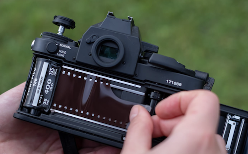

The correct ISO of that film stock is 400. ISO 400 is not very sensitive. It is best to use this ISO outdoors in the sun! That way it can be exposed properly.
 ______To load a film camera, you must open the back of the camera, place the film canister in the correct slot and pull the tab and place it in the prongs. After correctly loading the camera, it is important that you first...
Close the back of the camera!or
Make sure the ISO dial is on the correct number!